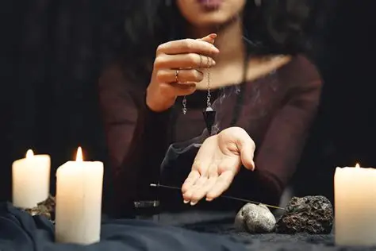

Dentro de las artes oscuras, pocas prácticas generan tanto temor y fascinación como el amarre eterno. A diferencia de un endulzamiento simple, el amarre busca doblegar la voluntad de una persona para forzar un vínculo sentimental que, de otro modo, no existiría. Es considerado una forma de magia roja o negra, dependiendo de las entidades invocadas y los materiales utilizados.
La tradición cuenta que para realizar un amarre efectivo se requieren elementos biológicos de la víctima: cabellos, prendas usadas o fluidos corporales, los cuales se entrelazan con figuras de cera o "muñecos" que representan a la pareja. Estos objetos son velados con cirios negros o rojos en altares ocultos, mientras se recitan conjuros que invocan a fuerzas del bajo astral para "atar" el pensamiento y el deseo de la persona deseada.
Sin embargo, los practicantes experimentados advierten sobre la "Ley del Retorno". Un amarre eterno rara vez trae felicidad genuina; la persona amarrada suele presentar cambios drásticos en su personalidad, volviéndose obsesiva, agresiva o cayendo en una profunda depresión, ya que su alma lucha inconscientemente contra la atadura espiritual. Además, quien solicita el trabajo queda vinculado a la misma energía oscura, pagando un precio que suele manifestarse en pérdidas materiales o enfermedades inexplicables.
En lugares como el Mercado de Sonora o las cuevas de Catemaco, los relatos de amarres que salieron mal abundan. Se dice que una vez que el nudo espiritual se aprieta demasiado, romperlo requiere un ritual de liberación mucho más peligroso que el original. El amarre eterno no es un acto de amor, sino un contrato de posesión que suele terminar consumiendo a ambos involucrados bajo el peso de una pasión artificial.